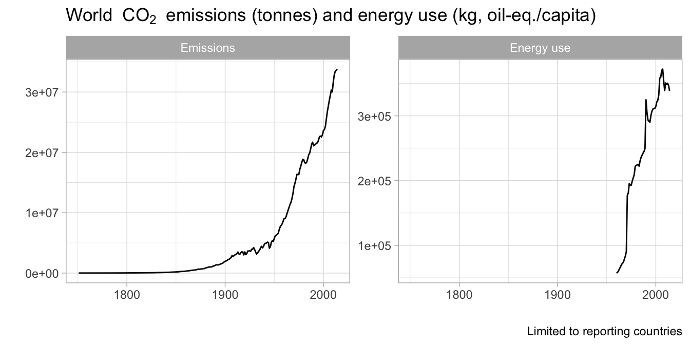
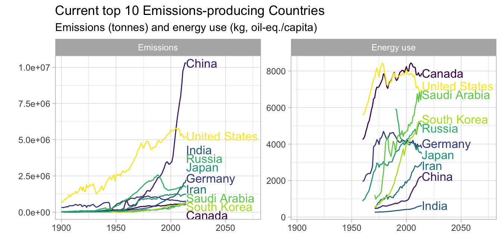
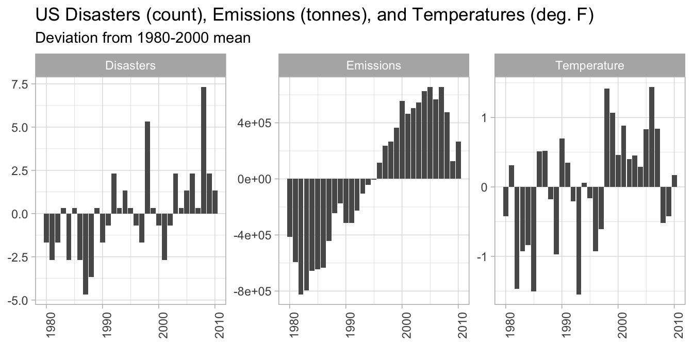
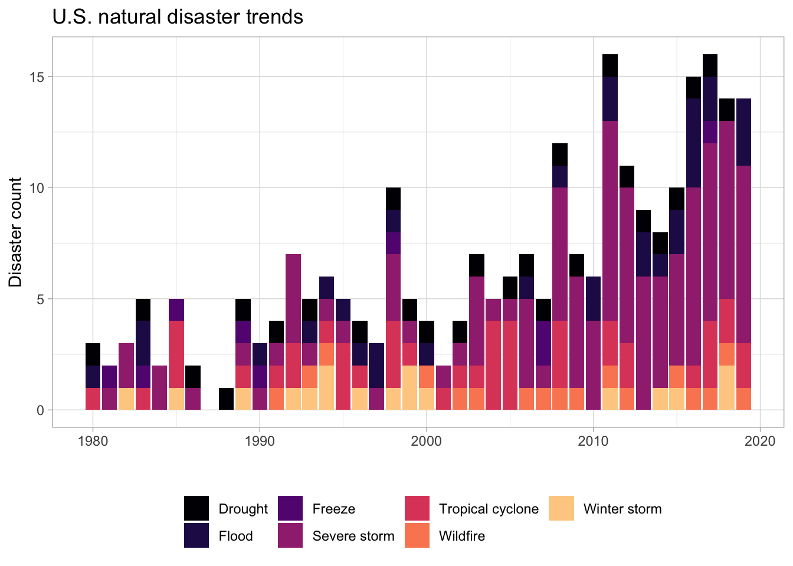
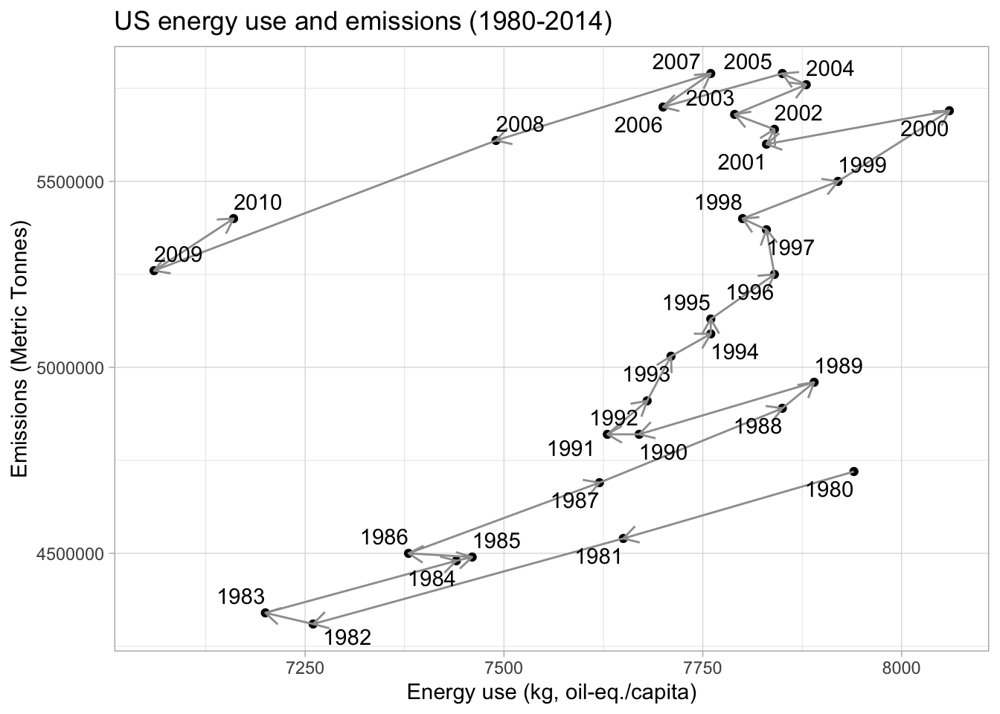
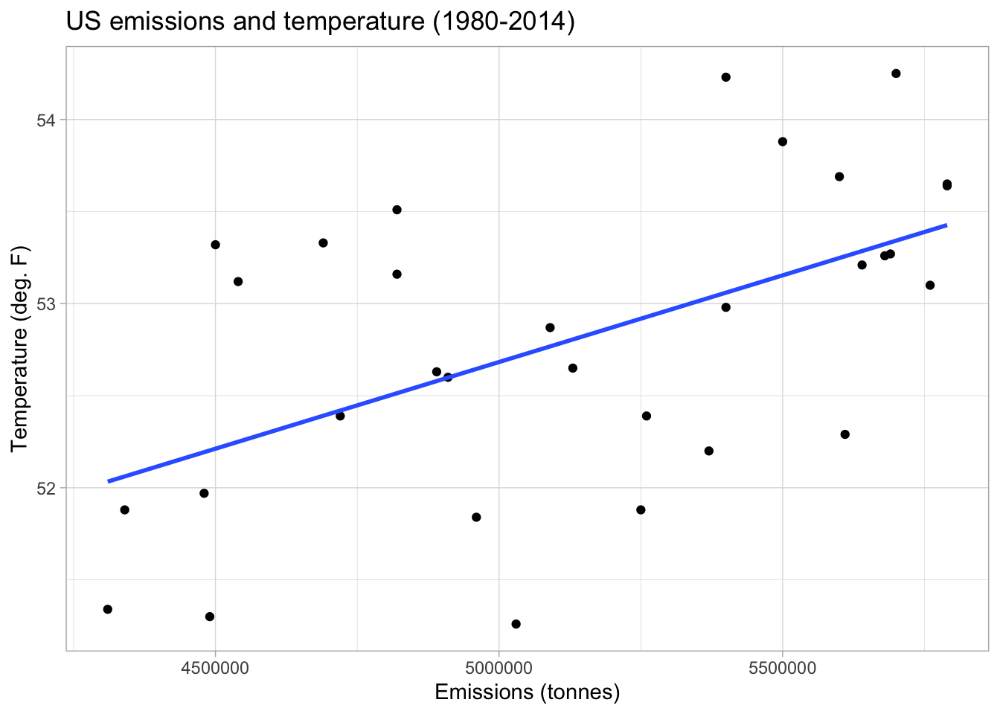
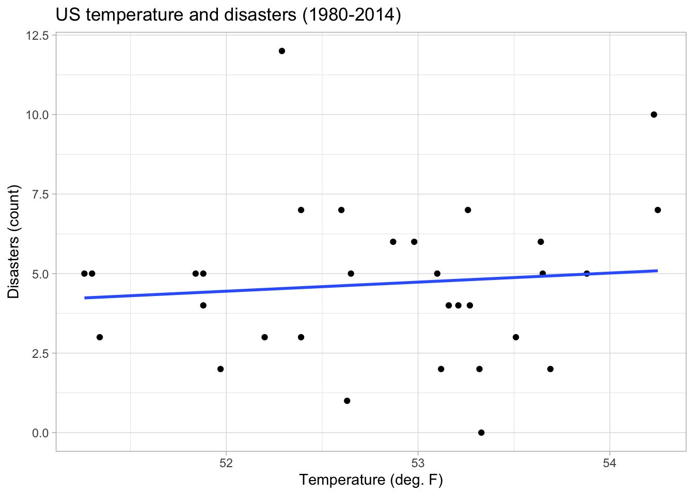

Project example: Exploring CO2 emissions across time
This case study is adapted from Wright et al. (2020). https://github.com/opencasestudies/ocs-bp-co2-emissions. Exploring CO2 emissions across time (Version v1.0.0).
Introduction
As anthropogenic greenhouse emissions increase, global temperatures have also increased, leading to cascading effects on the global climate system. The most recent Intergovernmental Panel on Climate Change report concluded global temperatures have increased by 2 degrees C since 1880, and temperatures are projected to increase over the next 100 years and beyond (IPCC 2021).
Globally, there have also been concurrent increases in the frequency and intensity of extreme weather, including tropical cyclones, droughts, wildfire, flooding, winter storms, and severe rain events (IPCC 2020). Climate change alters the frequency and intensity of these events via complex interactions in the global climate system. For example, increasing ocean heat content and atmospheric water content have been linked to severe storm and tropical cyclone intensity. Rising temperatures in arid regions have been linked to drought events. These “natural disasters” have globally led to millions of deaths and economic losses exceeding trillions of US dollars.
Greenhouse gas (GHG) emissions cause climate change via the greenhouse effect. CO2 and other greenhouse gases absorb infrared radiation, which traps heat in the atmosphere and makes the planet warmer (US EPA 2020). The most important GHGs directly emitted by humans include carbon dioxide (CO2), methane (CH4), nitrous oxide (N2O), and several fluorine-containing halogenated substances. From the pre- industrial era (i.e., ending about 1750) to 2018, concentrations of the most important GHGs have increased globally by 46, 165, and 23 percent, respectively (IPCC 2013). A variety of sources and sectors currently contribute to anthropogenic greenhouse gas emissions, including transportation, electricity generation, industry, agriculture, commercial, and residential.
CO2 - a particularly abundant and stable greenhouse gas - is the primary driver of global climate change. CO2 is actually the least heat-trapping gas of the greenhouse gases. However, because CO2 is so much more abundant and stays in the atmosphere much longer than other greenhouse gases, it has been the largest contributor to global warming (US EPA 2020). The global warming potential (GWP) of a greenhouse gas is defined as the ratio of the accumulated radiative forcing within a specific time horizon caused by emitting 1 kilogram of the gas, relative to that of the reference gas, CO2 (IPCC 2013). GWP-weighted emissions are provided in millions of metric tons of CO2 equivalent (MMT CO2 Eq.). CO2 is often used as proxy for all greenhouse gases when analyzing drivers and effects of climate change.
In this report, I explore how different countries have contributed to carbon dioxide (CO2) emissions over time and how CO2 emission rates may relate to increasing global temperatures and increased rates of natural disasters and storms. I combine several datasets, including global CO2 emissions since 1751, global energy use since 1960, and US natural disasters and temperature since 1980.
My primary questions are:
How and why have global CO2 emission rates changed over time? How do US emissions compare to other countries?
Are CO2 emissions and US, temperature, and natural disaster frequency in the US associated?
Data
I focused here on data related to CO2 emissions, as well as other variables that may influence, be influenced by or relate to CO2 emissions (Table 1). Most of the data was accessed from Gapminder and was originally obtained from the World Bank. In addition, I used temperature and natural disaster data that is specific to the United States from the National Oceanic and Atmospheric Administration (NOAA).
US data about: – Droughts – Floods – Freezes – Severe Storms – Tropical Cyclones – Wildfires – Winter Storms
NOAA National Centers for Environmental Information (NCEI) U.S. Billion-Dollar Weather and Climate Disasters (2020). https://www.ncdc.noaa.gov/billions/, DOI: 10.25921/stkw-7w73
US National yearly average temperature (in Fahrenheit) from 1895 to 2019
NOAA National Centers for Environmental information, Climate at a Glance: National Time Series, published June 2020, retrieved on June 26, 2020 from https://www.ncdc.noaa.gov/cag/
Tip: If you’d like to include a table with your data summary info in your report, the easiest way to do it is to enter the information into an excel spreadsheet and save it as a .csv file. Then read that file into R and assign it to an object, then use the kable() function to tell R to format the data frame object as a nice table when you knit your .Rmd.
For example, if I want to knit the first few rows of the iris data frame into a nice table, I would use:
knitr::kable(slice_head(iris, n =10))
Sepal.Length
Sepal.Width
Petal.Length
Petal.Width
Species
5.1
3.5
1.4
0.2
setosa
4.9
3.0
1.4
0.2
setosa
4.7
3.2
1.3
0.2
setosa
4.6
3.1
1.5
0.2
setosa
5.0
3.6
1.4
0.2
setosa
5.4
3.9
1.7
0.4
setosa
4.6
3.4
1.4
0.3
setosa
5.0
3.4
1.5
0.2
setosa
4.4
2.9
1.4
0.2
setosa
4.9
3.1
1.5
0.1
setosa
Tip: I didn’t use the skim() function here to summarize the datasets because some of these datasets are quite large and the output would take up too much space. If that’s the case for your data, it’s ok to skip this as well.
Methods
Data Wrangling
I first wrangled each dataset to meet “tidy data” requirements and created or recoded variables to enable joining with the other datasets. The global co2_emissions, gdp_growth, and energy_use were all formatted similarly, so I applied the same wrangling procedure to each dataset. I used pivot_longer to pivot from wide to long format and ensured that variables were of appropriate types.
# A tibble: 50,688 × 3
country year emissions
<chr> <dbl> <dbl>
1 Afghanistan 1751 NA
2 Afghanistan 1752 NA
3 Afghanistan 1753 NA
4 Afghanistan 1754 NA
5 Afghanistan 1755 NA
6 Afghanistan 1756 NA
7 Afghanistan 1757 NA
8 Afghanistan 1758 NA
9 Afghanistan 1759 NA
10 Afghanistan 1760 NA
# ℹ 50,678 more rows
# A tibble: 9,295 × 3
country year energy_use
<chr> <dbl> <dbl>
1 Albania 1960 NA
2 Albania 1961 NA
3 Albania 1962 NA
4 Albania 1963 NA
5 Albania 1964 NA
6 Albania 1965 NA
7 Albania 1966 NA
8 Albania 1967 NA
9 Albania 1968 NA
10 Albania 1969 NA
# ℹ 9,285 more rows
The us_disasters dataset contains annual counts of 7 different disasters, including droughts, floods, freezes, severe storms, tropical cyclones, wildfires, and winter storms as well as simulated economic costs of each disaster type and economic model error estimates. For the sake of simplicity, I selected only disaster counts using the select() and contains() functions in the dplyr package. I then summed the total number of disasters for each year using the the base R rowSums() function and added this new variable directly to the us_disaster tibble by using the mutate() function of dplyr and using the . notation. In addition, I added a new variable called country to indicate that this data is from the United States and an indicator variable to indicate that the variable of interest is disasters for later joining with global data.
# A tibble: 40 × 4
year country indicator value
<dbl> <chr> <chr> <dbl>
1 1980 United States disasters 3
2 1981 United States disasters 2
3 1982 United States disasters 3
4 1983 United States disasters 5
5 1984 United States disasters 2
6 1985 United States disasters 5
7 1986 United States disasters 2
8 1987 United States disasters 0
9 1988 United States disasters 1
10 1989 United States disasters 5
# ℹ 30 more rows
The us_temperature dataset was already in tidy format, but I recoded date to remove the “12” from the end of each value, renamed the date variable to year, removed the anomaly variable, and, as with the disasters dataset, created country and indicator variables.
# A tibble: 125 × 4
year country indicator value
<dbl> <chr> <chr> <dbl>
1 1895 United States temperature 50.3
2 1896 United States temperature 52.0
3 1897 United States temperature 51.6
4 1898 United States temperature 51.4
5 1899 United States temperature 51.0
6 1900 United States temperature 52.8
7 1901 United States temperature 51.9
8 1902 United States temperature 51.6
9 1903 United States temperature 50.6
10 1904 United States temperature 51.2
# ℹ 115 more rows
After wrangling the individual datasets, I used the full_join function to merge the global datasets, and then used pivot_longer() to pivot to long format.
# A tibble: 101,376 × 4
year country indicator value
<dbl> <chr> <chr> <dbl>
1 1751 Afghanistan emissions NA
2 1751 Afghanistan energy_use NA
3 1752 Afghanistan emissions NA
4 1752 Afghanistan energy_use NA
5 1753 Afghanistan emissions NA
6 1753 Afghanistan energy_use NA
7 1754 Afghanistan emissions NA
8 1754 Afghanistan energy_use NA
9 1755 Afghanistan emissions NA
10 1755 Afghanistan energy_use NA
# ℹ 101,366 more rows
I then combined this new global_data data object with the disasters and temp datasets using the bind_rows() function of the dplyr package, which appended these datasets to the end of the global_data table. I also converted the country column to a factor and created a new variable called region that indicates whether the data are from the United States or a different country based on the values of the country variable using the case_when() function. Finally, I removed rows for countries with NA values using the drop_na() function.
I then used the all_data dataset to visually explore how global and country-specific CO2 concentrations have changed over time and how CO2 concentration relates to country-specific energy use. I also explored potential relationships between U.S. energy use, CO2 emissions, temperature change, and natural disasters. Some additional data wrangling was required to summarize variables of interest. I performed these operations in each relevant plotting pipeline, or created new wrangled data objects where necessary. I used the directlabels and viridis packages to add direct data labels to some plots and modify color palettes.
Results and discussion
Global energy use and CO2 Emissions
Global CO2 emissions have increased over time starting in the 1850s and rapidly accelerating after the 1950s. Energy use has also increased since data reporting began in 1960, indicating a potential correlation between emissions and energy use.
all_data |>filter(indicator %in%c("emissions", "energy_use")) |>group_by(year, label) |>summarize(value =sum(value)) |>ggplot(aes(x = year, y = value)) +geom_line() +facet_wrap(~label, scales ="free_y") +labs(title ="World "~CO[2]~" emissions (tonnes) and energy use (kg, oil-eq./capita)",caption ="Limited to reporting countries",y ="", x ="") +theme_light()

Figure 1. Long-term global CO2 emissions and energy use trends.
Tip: You can use fig.asp to change the aspect ratio of your figure if it is too short or tall when you knit your document (more info.
Among the current top 10 emitting countries, the U.S. had the greatest emissions until ~2004. Emissions from China then surpassed those of the U.S and continued to rapidly increase. Per capita emissions generally increased until the ~2000s and then began to decrease for Canada, the US, Germany, and Japan. Emissions continue to increase for the remaining top 10 emitters. Although China currently has the greatest total emissions and India had the third greatest emissions, they rank ninth and tenth in per-capita energy use. A possible explanation for this discrepancy is that other factors that are not represented in these data, such as population and energy production sources, also likely contribute to total emissions. For example, a country’s per-capita energy use could be low but total emissions could still be high if the country has a large population. The contribution of renewable energy sources to energy use may also be important. For example, a country could have high energy use, but it could have low CO2 emissions if its energy sources are largely renewable. Information about these additional variables is needed to accurately describe the relationship between energy use and CO2 emissions.
top_10_count <- all_data |>filter(indicator =="emissions", year ==2014) |>mutate(rank =dense_rank(desc(value))) |>filter(rank <=10) |>arrange(rank)all_data |>filter(country %in%pull(top_10_count, country)) |>filter(indicator %in%c("emissions", "energy_use")) |>filter(year >=1900) |>ggplot(aes(x = year, y = value, color = country)) +geom_line() +facet_wrap(~label, scales ="free_y") +scale_color_viridis_d() +labs(title ="Current top 10 Emissions-producing Countries",subtitle ="Emissions (tonnes) and energy use (kg, oil-eq./capita)",y ="",x ="") +theme_light() +scale_x_continuous(expand =expansion(mult =c(0.05, .6))) +geom_dl(aes(label = country), method =list("last.qp")) +theme(legend.position ="none")

Figure 2. CO2 emissions and energy use for the top-10 emitting countries in 2014.
Tip: I used the directlabels package here to add labels to my plot. Direct labeling options are available here is a list of options. You can also use the geom_text_repel() function from the ggrepel package. More details are here. I used scale_x_continuous(expand...) to increase the amount of white space on the right side of the figure so that the country line labels would fit inside the plot panel (more info.
U.S. CO2 emissions, temerature, and natural disasters
In the U.S., disaster frequency, emissions, and temperatures were all generally below long-term averages before the mid-1990s and above average after the 1990s.
data_us <- all_data |>filter(country =="United States", year >=1980, year <=2010) |>group_by(indicator) |>mutate(mean_val =mean(value), diff_from_mean = value - mean_val) |>ungroup()data_us |>filter(indicator %in%c("emissions", "temperature", "disasters")) |>ggplot(aes(x = year, y = diff_from_mean)) +geom_bar(stat ="identity") +facet_wrap(~label, scales ="free_y") +theme_light() +theme(axis.text.x =element_text(angle =90),axis.title =element_blank(),legend.position ="none") +labs(title ="US Disasters (count), Emissions (tonnes), and Temperatures (deg. F)",subtitle ="Deviation from 1980-2000 mean")

Figure 3. Disasters, emissions, and temperature anomalies (deviation from 1980-2010 mean).
The frequency of U.S. disasters has been increasing over time, with fewer than 5 disasters per year prior to 1992, increasing to 15 or more disasters per year after 2010.
us_disaster |>select(year, contains("count")) |>pivot_longer(cols =2:8) |>mutate(name_label =case_when(name =="drought_count"~"Drought", name =="flooding_count"~"Flood", name =="freeze_count"~"Freeze", name =="severe_storm_count"~"Severe storm", name =="tropical_cyclone_count"~"Tropical cyclone", name =="wildfire_count"~"Wildfire", name =="winter_storm_count"~"Winter storm")) |>ggplot(aes(x = year, y = value, fill = name_label)) +geom_bar(stat ="identity") +scale_fill_viridis_d(option ="magma", end =0.9) +labs(x ="", y ="Disaster count", fill ="", title ="U.S. natural disaster trends") +theme_light() +theme(legend.position ="bottom")

Figure 4. Frequency of natural disasters in the U.S. from 1908-2019.
Severe storms have most dramatically increased. Floods, droughts, and wildfires also appear to be more frequently occurring, while freeze event frequency appears to be decreasing.
us_disaster |>select(year, contains("count")) |>pivot_longer(cols =2:8) |>mutate(name_label =case_when(name =="drought_count"~"Drought", name =="flooding_count"~"Flood", name =="freeze_count"~"Freeze", name =="severe_storm_count"~"Severe storm", name =="tropical_cyclone_count"~"Tropical cyclone", name =="wildfire_count"~"Wildfire", name =="winter_storm_count"~"Winter storm")) |>ggplot(aes(x = year, y = value, color = name_label)) +geom_line() +geom_smooth(se =FALSE, color ="#737373", linewidth =0.5) +facet_wrap(~name_label) +scale_color_viridis_d(option ="magma", end =0.9) +labs(x ="", y ="Disaster count", fill ="", title ="U.S. natural disaster trends") +theme_light() +theme(legend.position ="none")
Figure 5. Frequency of natural disasters in the U.S. from 1908-2019 with smooth trend line.
U.S. emissions are possibly related to per capita energy use, but the relationship appears to be evolving over time. From the 1980’s to ~2000, emissions increased as energy use increased. However, between ~2000-2010, per-capita energy use returned to 1980’s levels. Emissions also decreased, but not to 1980’s levels. In other words, there was a shift in emissions per unit of energy use, where more CO2 was emitted for a given amount of energy use after the 2000s. This could be indicative of increased CO2 emissions from sources other than energy use after 2000 despite concurrent decreases in energy use. Indeed, emissions from transportation have been increasing over time.
us_wide <- data_us |>select(-label, -diff_from_mean, -mean_val) |>pivot_wider(names_from = indicator, values_from = value)us_wide |>ggplot(aes(x = energy_use, y = emissions)) +geom_point() +geom_segment(aes(xend =c(tail(energy_use, n =-1), NA),yend =c(tail(emissions, n =-1), NA)), arrow=arrow(length=unit(0.3,"cm")),color ="#9e9e9e") +theme_light() +labs(title ="US energy use and emissions (1980-2014)",x ="Energy use (kg, oil-eq./capita)",y ="Emissions (Metric Tonnes)") +geom_text_repel(aes(x = energy_use, y = emissions, label = year))

Figure 6. U.S. energy use and CO2 emissions from 1980-2014.
There appears to be a positive relationship between emissions and temperature in the U.S., which is consistent with what we know about the linkage between CO2 emissions and temperature change via the greenhouse effect.
us_wide |>ggplot(aes(x = emissions, y = temperature)) +geom_point() +geom_smooth(method ="lm", se =FALSE) +theme_light() +labs(title ="US emissions and temperature (1980-2014)",x ="Emissions (tonnes)",y ="Temperature (deg. F)")

Figure 7. U.S. CO2 emissions and temperature from 1980-2014.
There also appears to be a slight positive relationship between temperature and the frequency of disasters. This is consistent with research that draws mechanistic linkages between global temperatures, ocean and atmospheric heat content, and changes in the frequency and intensity of extreme weather events.
us_wide |>ggplot(aes(x = temperature, y = disasters)) +geom_point() +geom_smooth(se =FALSE, method ="lm") +theme_light() +labs(title ="US temperature and disasters (1980-2014)",x ="Temperature (deg. F)",y ="Disasters (count)")

Figure 8. U.S. CO2 temperature and disaster frequency from 1980-2014.
Just for fun, I also recreated the famous warming stripes visualization for US temperatures. The visualization depicts the same data as the temperature anomaly bar plot above, but with an emphasis on using color to convey the relative temperature trend over time.
An important limitation of this data analysis is that the datasets only include countries and years in which countries were reporting relevant information to the agencies that collected the data. Thus, the data are incomplete. For example, while we have a fairly good sense of CO2 emissions globally for later years, additional emissions were also produced by countries that are not included in the data, especially in earlier years. Another limitation is that some variable were reported on a per capita basis (energy use), while other variables were aggregated to the country level (emissions). Having population data would have been useful for distinguishing for effects of population size on aggregated emissions.
Conclusions
In summary, this case study evaluated CO2 emissions from as far back as 1751 (for some countries) through 2014. My exploratory analyses showed that global levels of CO2 emissions have dramatically increased over time, with some countries responsible for particularly high levels. I also showed that CO2 emissions appear to be related to energy use, temperature, and natural disasters in the U.S., which supports other research that draws mechanistic linkages between these variables (IPCC 2021). My exploratory analyses are, therefore, consistent with the general scientific consensus that anthropogenic GHG emissions are causing climate change. It is vital that we work around the globe to reduce future GHG emissions to mitigate the increased temperatures that we will experience due to previous and existing CO2 emissions, to minimize future warming. Furthermore, we need to prepare for increased rates of natural disasters and how they may impact global social and ecological systems. Evidence suggests that people who have disproportionately less access to resources are the most affected by disasters (IPCC 2021). We need to be particularly mindful of this as we prepare for the future.
References
Hansen, J., Nazarenko, L., Ruedy, R., Sato, Mki., Willis, J., Del Genio, A., Koch, D., Lacis, A., Lo, K., Menon, S., Novakov, T., Perlwitz, J., Russell, G., Schmidt, G.A., and Tausnev, N. 2005. Earth’s energy imbalance: Confirmation and implications. Science, 308, 1431-1435. doi: 10.1126/science.1110252
IPCC. 2013. Climate Change 2013: The Physical Science Basis. Contribution of Working Group I to the Fifth Assessment Report of the Intergovernmental Panel on Climate Change [Stocker, T.F., D. Qin, G.-K. Plattner, M. Tignor, S.K. Allen, J. Boschung, A. Nauels, Y. Xia, V. Bex and P.M. Midgley (eds.)]. Cambridge University Press, Cambridge, United Kingdom and New York, NY, USA.
IPCC. 2021. Climate Change 2021: The Physical Science Basis. Contribution of Working Group I to the Sixth Assessment Report of the Intergovernmental Panel on Climate Change[Masson-Delmotte, V., P. Zhai, A. Pirani, S.L. Connors, C. Péan, S. Berger, N. Caud, Y. Chen, L. Goldfarb, M.I. Gomis, M. Huang, K. Leitzell, E. Lonnoy, J.B.R. Matthews, T.K. Maycock, T. Waterfield, O. Yelekçi, R. Yu, and B. Zhou (eds.)]. Cambridge University Press, Cambridge, United Kingdom and New York, NY, USA.
Melillo, J.M., T.C. Richmond, and G.W. Yohe (eds.). 2014. Climate change impacts in the United States: The third National Climate Assessment. U.S. Global Change Research Program.
US EPA 2020. Inventory of US Greenhouse Gas Emissions and Sinks: 1990–2018. EPA 430-R-20-002, Tech. Rep. https://www.epa.gov/ghgemissions/inventory-us-greenhouse-gas-emissions-and-sinks